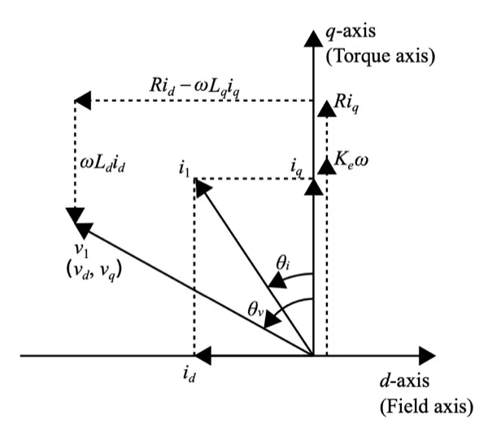
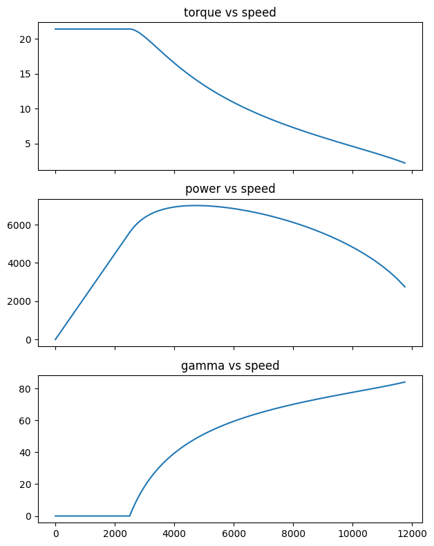
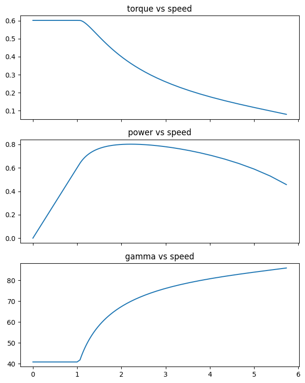
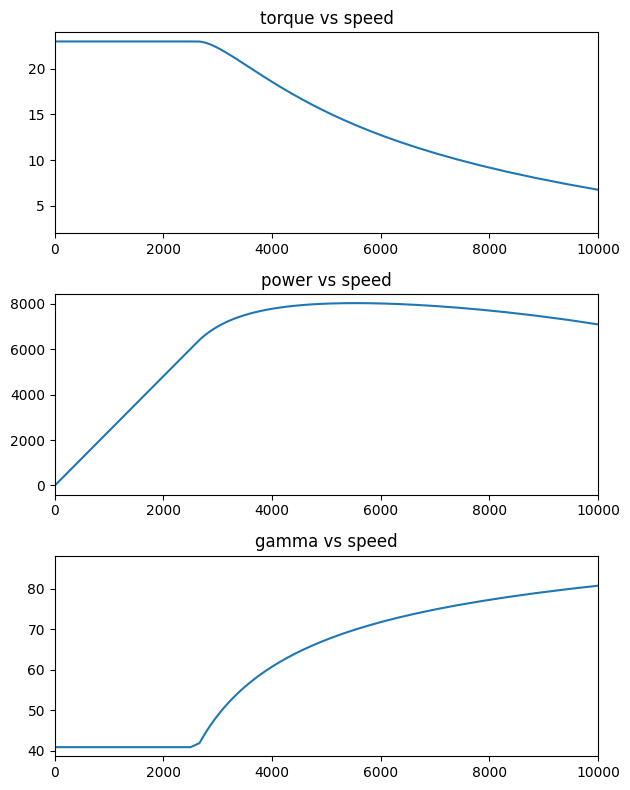

pu_pmsm
per unit equations of pmsm and their corresponding torque-speed profiles
pmsm per unit analysis
Ideal PMSM model in p.u ignoring resistance
\(V = \omega \sqrt{ (\lambda_m - L_d i_d )^2 + (L_q i_q )^2 }\)
\(T = \dfrac{3 p}{2} [\lambda_m i_q + (L_q - L_d)i_q i_d]\)
\(i_d = I \sin(\gamma)\)
\(i_q = I \cos(\gamma)\)
Theory: spm pu analysis implementation
spm class provides the ideal per unit capability of the machine defined by two parameters
1. flux linkage (\(\lambda_m\)) = phi_m
2. inductance (\(L_d = L_q = L\)) = lpu
SPM achieves maximum torque per ampere with \(\gamma = 0\).
At base speed, \(V\), \(\omega\) have 1 p.u value.
Considering these SPM specific constraints at base speed, \(\lambda_m\) and \(L\) are bound by
\(1 = \sqrt{\lambda_m^2 + L^2 }\)
In this implementation, SPM machine is characterized by just \(L\) i.e \(lpu\) as input. \(\lambda_m\) is calculated using the above constraint.
spm
spm (phi_m)
Initialize self. See help(type(self)) for accurate signature.
spm.motor_puprofile
spm.motor_puprofile (gamma_limit=85)
this method calculates the per unit profile of the machine with current angle limit of 85 degrees
spm.motor_profile
spm.motor_profile (Vb, Pb, wb)
This method takes Vb, Pb, wb as the base values for line voltage, KVA rating of the machine, base speed respectively
spm.plot_puprofile
spm.plot_puprofile ()
plots the motor performance profile in p.u
spm.plot_profile
spm.plot_profile ()
plots the motor performance profile in actual values
spm class use: example
Machine profile with:
magnet flux linkage = 0.8 p.u
line-line base voltage = 42 V
base power value (available KVA) = 7000 W
base speed = 2500 rpm
M1 = spm(0.8)
M1.motor_puprofile()
M1.motor_profile(42, 7000, 2500)
M1.plot_profile()
Theory: IPM pu analysis and impelmentation
\(\eta = \dfrac{L_q}{L_d}\)
\(V = \omega \sqrt{ (\lambda_m - L_d \cos(\gamma) )^2 + (\eta L_d \sin(\gamma) )^2 }\)
\(T = \dfrac{3 p}{2} [\lambda_m \cos(\gamma) + (\eta - 1) L_d \dfrac{sin(2\gamma)}{2}]\)
- The machine should operate with maximum torque per ampere decided by the current angle \(\gamma\)
- \(\gamma\) is dependent on the values of \(\lambda_m, L_d, \eta\)
- The machine MTPA operation at base speed should achieve 1 p.u. voltage value
\(\gamma_{mtpa} = \sin^{-1} \Big[ \dfrac{ -\lambda_m + \sqrt{ \lambda_m^2 + 8xx^2} }{4xx} \Big]\) where, \(xx = L_d(\eta - 1)\).
However the above expression is only valid if \(\eta > 1\)
Several possible combinations of \(\lambda_m, L_d, \eta\) can achieve given torque-speed characterisitic. To achieve ideal field weakening however, there exists a unique combination of \(\lambda_m = L_d\) and \(\eta\).
ipm
ipm (phi_m, ld)
Initialize self. See help(type(self)) for accurate signature.
spm.motor_puprofile
spm.motor_puprofile (gamma_limit=85)
this method calculates the per unit profile of the machine with current angle limit of 85 degrees
ipm.motor_profile
ipm.motor_profile (Vb, Pb, wb)
This method takes Vb, Pb, wb as the base values for line voltage, KVA rating of the machine, base speed respectively
ipm.plot_puprofile
ipm.plot_puprofile ()
plots the motor performance profile in p.u
ipm.plot_profile
ipm.plot_profile ()
plots the motor performance profile in actual values
ipm class use: example
Machine profile with:
magnet flux linkage = 0.8 p.u
saliency = 2
Ld = 0.3 p.u
line-line base voltage = 42 V
base power value (available KVA) = 7000 W
base speed = 2500 rpm
M2 = ipm(0.2, 0.35)
M2.calc_sal()
print("machine parameters validity: {}".format(M2.valid))
print("suggested machine saliency: {}".format(M2.sal))machine parameters validity: 0
suggested machine saliency: 3.6M2.motor_puprofile()
M2.plot_puprofile()
M2.motor_profile(42, 10000, 2500)
print('base current: {} A rms'.format(M2.Ib))
print('max torque: {} N.m'.format(round(max(M2.values['torque']),2)))
M2.plot_profile()base current: 194.4 A rms
max torque: 22.98 N.m